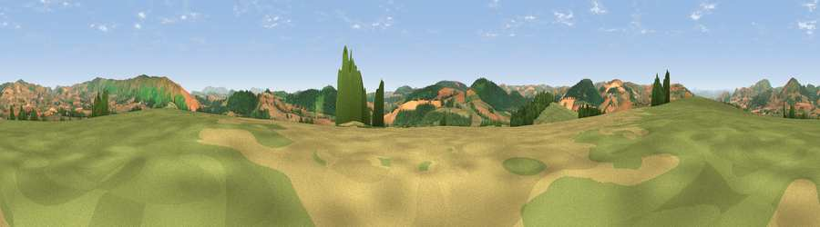

Viewpoint near Lydbury North
#12420 in England · top 39% of its area beats it · near Lydbury NorthWhere it is
The exact computed spot (SO 34975 87425). Click the marker for map links.
The view, rendered

A 360° render of this exact spot computed from the terrain model, tree cover and land cover — summer colours, afternoon light, calibrated against photographs of famous viewpoints. Real trees, hedges and buildings will differ in detail.
The panorama
Grey silhouette: terrain skyline in each direction (720 bearings, Earth curvature and refraction included). Dashed green: skyline with trees (+15 m) and buildings (+8 m) as obstacles. Blue strip: how far the ground is visible on each bearing.
Where the view opens
Wedge length = distance to the farthest visible ground on that bearing (vegetation-aware). Rings at 10, 25 and 50 km.
What fills the view
56% grassland · 29% woodland · 15% cropland
Angular shares of the visible panorama (visual magnitude), not map area. Landscape diversity 0.43 (0–1 Shannon).
Key numbers
More beautiful places nearby
The staircase of upgrades: each row has a higher view potential than everything closer. Driving times are estimates from straight-line distance, calibrated against real road routing — check an actual route before setting out.
| Place | Direction | Drive | Score |
|---|---|---|---|
| Viewpoint near Bishop's Castle | NW · 4 km | ~9 min | 60.7 |
| Viewpoint near Kempton | SE · 4 km | ~9 min | 60.8 |
| Viewpoint near Brockton | SSW · 4 km | ~10 min | 74.9 |
| Viewpoint near Asterton | ENE · 5 km | ~10 min | 83.0 |
| The Lawley | NE · 18 km | ~30 min | 85.8 |
| Viewpoint near Little Wenlock | NE · 34 km | ~52 min | 86.6 |
| North Hill | SE · 59 km | ~81 min | 86.8 |
| Worcestershire Beacon | SE · 59 km | ~82 min | 87.1 |
52.48086, -2.95889 · source: screening · position refined by local search. Computed location — check access rights before visiting.